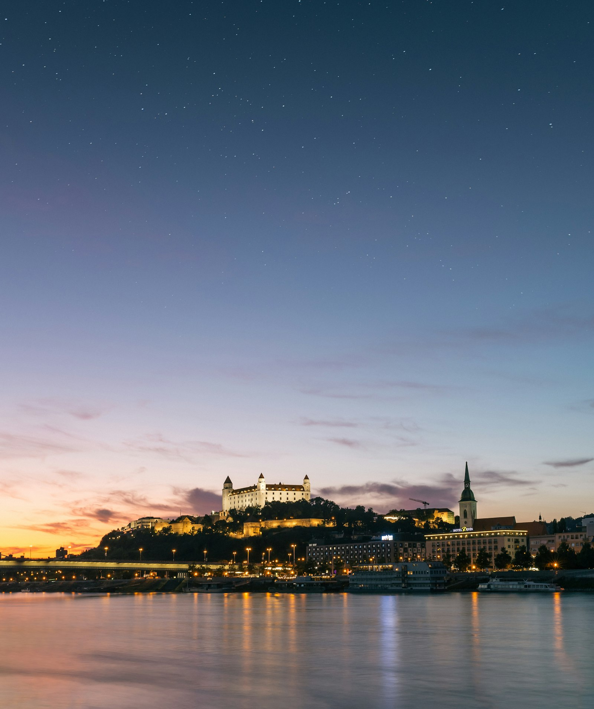

Коротко: после получения ВНЖ в Словакии страховку надо оформить в течение нескольких дней (ориентировочно около 8). Если у вас есть работа, бизнес, статус студента или вы ребёнок - вам положена государственная страховка, она выгоднее и шире. Если основания нет, остаётся коммерческий полис: он дороже и покрывает меньше.
Карту резидента выдали, все выдохнули - и вот тут как раз легко наступить на грабли. Страховка в Словакии не подключается сама, и на её оформление даётся очень короткий срок. Пропустить его проще, чем кажется, особенно когда после подачи на ВНЖ хочется немного выдохнуть. А лечиться без действующей страховки в чужой стране - это совсем не та экономия, которой стоит радоваться.
Государственная и коммерческая: в чём настоящая разница
Это два разных мира, и путать их дорого. Государственная страховка (verejné zdravotné poistenie) работает по принципу солидарной системы: вы платите взносы, а взамен получаете доступ к врачам, больницам, плановому лечению и лекарствам по льготным ценам. По сути это полноценная медицина почти без доплат у врача.
Коммерческая страховка - это полис частной компании с конкретной страховой суммой и списком того, что она покрывает. Она в основном про неотложную помощь, а плановое и хроническое лечение покрывает частично или не покрывает совсем. Стоит дороже, а защищает уже, чем государственная. Поэтому коммерческий полис - это вынужденный вариант, к которому прибегают, когда права на государственную страховку пока нет.
Коммерческая страховка спасает в острой ситуации. Государственная - даёт спокойно жить и лечиться годами.
Кому положена государственная страховка
Главный вопрос звучит так: есть ли у вас основание для государственной системы. Само по себе ВНЖ его не даёт - нужна причина, по которой вы становитесь частью этой системы.
- Работающие по найму. За вас взносы платит работодатель, всё происходит почти автоматически.
- Предприниматели. Если у вас живность или s.r.o., вы платите взносы сами как самозанятый, и это даёт право на государственную страховку.
- Студенты. Учёба в словацком учебном заведении тоже может быть основанием.
- Дети. За детей до совершеннолетия отвечает государство или родитель-плательщик.
А вот если человек не работает, не ведёт бизнес и не учится, государственная страховка ему может быть просто не положена. Это самая частая ловушка для семей, где один работает, а второй пока сидит дома.
Страховка для детей и неработающего супруга
С детьми обычно проблем нет: несовершеннолетние получают государственную страховку, надо лишь вовремя её оформить и приложить документы на ребёнка. А вот неработающий супруг - частая головная боль.
Если у второго в семье нет своего основания, государственная страховка ему может быть недоступна, и придётся либо оформлять коммерческий полис, либо находить основание. Часто самое простое решение - открыть человеку живность: это и страховка по государственной системе, и заодно шаг к собственному ВНЖ. Какой вариант выгоднее именно в вашей ситуации, как раз разбираем на консультации, потому что цифры и условия у каждой семьи свои.
Сроки и смена страховой компании
Государственных страховых в Словакии несколько - VšZP, Dovera, Union. Принципиально они похожи, отличаются сервисом, сетью врачей и мелкими бонусами. На старте можно выбрать любую, главное - успеть оформиться в отведённый короткий срок после ВНЖ.
Сменить страховую потом можно, но не когда захочется: переход разрешён раз в год. Заявление обычно подают до конца сентября, а новая компания берёт вас под крыло с 1 января. Среди года перебежать к другому страховщику по желанию не получится, так что к первому выбору лучше отнестись чуть внимательнее, чем кажется поначалу.
Что в итоге делать
Порядок простой: сразу после ВНЖ определяете своё основание, выбираете государственную страховую и оформляетесь, не дожидаясь конца срока. Если основания нет - решаете вопрос с коммерческим полисом или открываете бизнес, чтобы попасть в государственную систему. Детей оформляете отдельно, но тоже сразу.
Мы помогаем разложить эту схему под конкретную семью: кому какая страховка положена, что выгоднее открыть неработающему, как не пропустить сроки и оформить детей. Если хотите, чтобы вопрос со страховой не висел над головой, приходите на консультацию - разберём вашу ситуацию по пунктам. А пока полезно посмотреть, что ещё ждёт сразу после ВНЖ: например, замену водительских прав и устройство ребёнка в сад или школу.